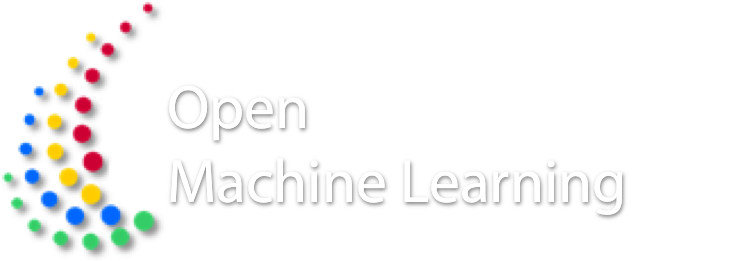
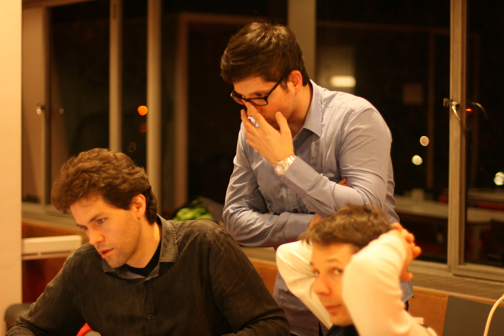
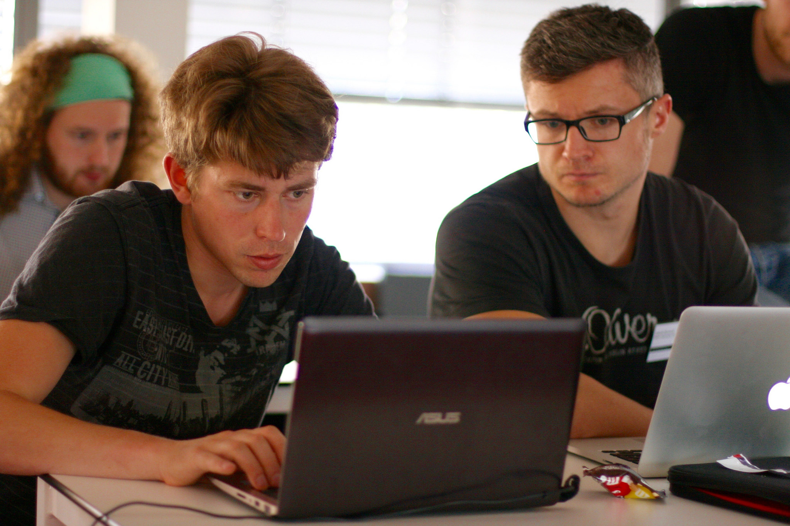
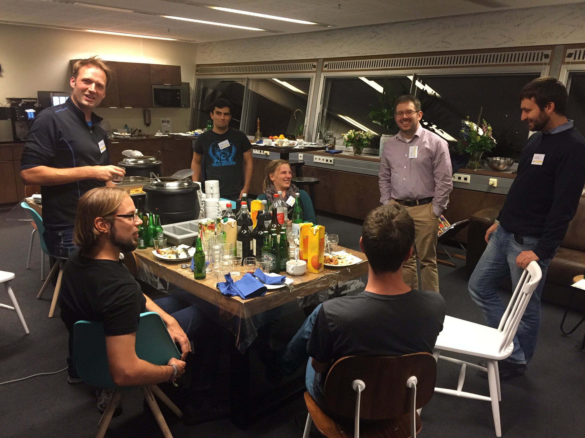

Next meeting:
Fall Hackathon, 17-21st of September 2018, Paris
Fall Hackathon, 17-21st of September 2018, Paris

We are dedicated
to creating an open, online ecosystem for machine learning. OpenML is a place for sharing data sets, machine learning algorithms, and experiments, organized into a coherent whole, connected to the people who created them. It helps you streamline your studies, automate analysis, produce reproducible results, and collaborate in real-time online.
More information on OpenML.org.

Changing the world
requires focussed, deep work. In hackathon-style events, we break away from routine and work for entire weeks on new ideas that push the scientific community forward. From building cool extensions of OpenML itself to solving data-driven problems in novel ways, we believe in open science and democritizing machine learning for everyone. Just bring your laptop, we take care of drinks, snacks, focussed time, and great company.
More pictures.

We are always open
to new people and new ideas. Participation is free, but places are limited. Please send us a short motivation of what you would love to work on. We'll let you know whether we can fit you in. Sadly, we can't offer travel support.
More questions? Contact us.
We can't wait to see you there!
Next meeting: 17-21 September 2018, Paris, France
Kindly hosted by INRIA Paris
2 Rue Simone IFF, 75012 Paris
Room Alan Turing
How to get there
Register now
Interested in sponsoring OpenML?
Please contact us.